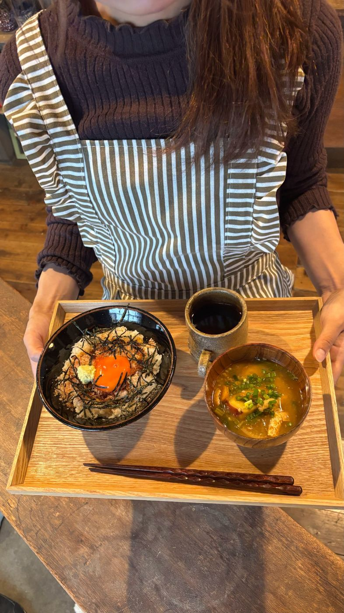
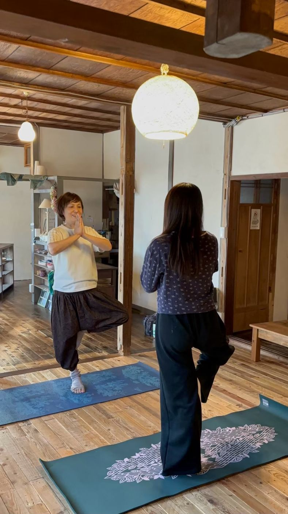
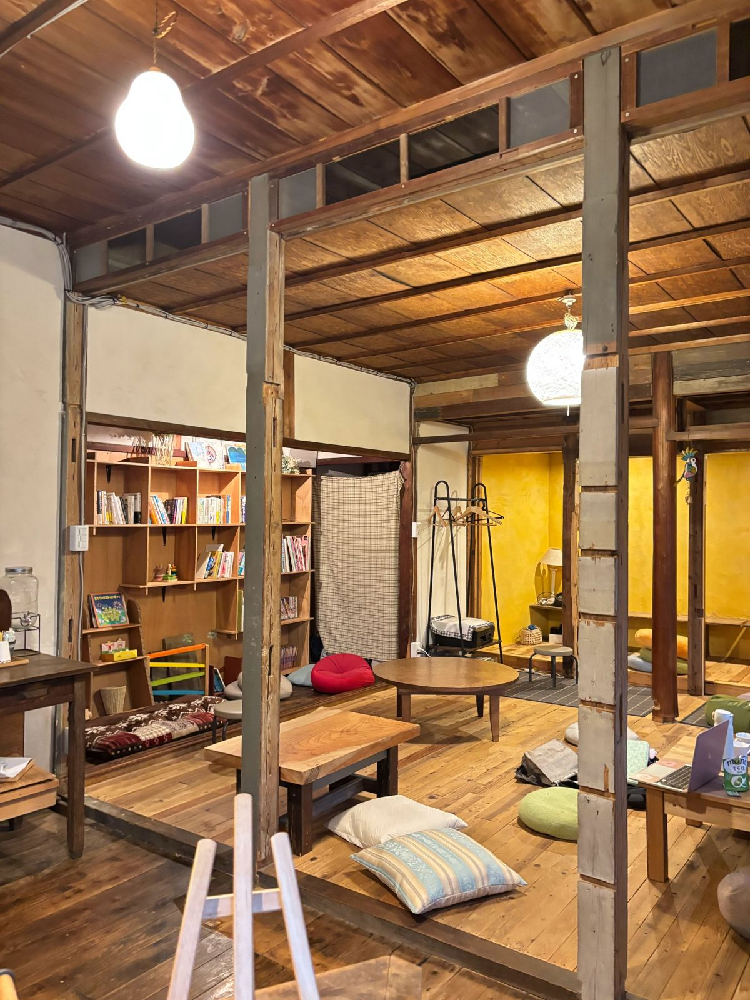

大阪大谷大学 学生企画 ゆるくつながるプロジェクト
世代も、暮らす場所も違う人たちが、
河南町の小さなスペースで、
ゆるくつながる時間を。
お知らせ
ABOUT プロジェクトについて
ゆるくつながるプロジェクトは、大阪大谷大学の学生が、河南町・寛弘寺の「くつろぎ自由研究室」で行っている居場所づくりのプロジェクトです。
モーニングを食べたり、ヨガをしたり、SNSを学んだり、子どもたちが放課後に集まったり。世代も、住んでいる場所も違う人たちが、同じ場所でゆるくつながる時間を大切にしています。
「ゆるくつながる」に込めた、4つの意味
くらげのように、ゆるくつながる
-
人と人がつながる
参加者同士、世代をこえて。
-
自分とつながる
ヨガで、自分の体と心に向き合う時間。
-
地域とつながる
河南町の人や場所、SNSの発信を通して。
-
めぐりがつながる
生ゴミ → 堆肥 → 野菜 → 食卓の循環。
NUMBERS 数字で見る活動
CONTENTS 4つの企画

MORNING & COMPOST
生わさびご飯モーニング＆
はじめてのコンポスト講座
すりおろしたての本わさびでいただく朝ごはんと、生ごみを堆肥に変えるコンポストの始め方。
くわしく見る
SNS
地域コミュニティ×
SNS活用講座（全5回）
発信・投稿のコツを学ぶ講座。講座のあとはランチ＆フリータイムです。
くわしく見る
YOGA
くつろぎヨガ教室（全4回）
難しいポーズはなく、椅子に座ったままでも参加できます。呼吸に集中しながら、ゆっくり体をほぐします。
くわしく見る
AFTER SCHOOL
放課後いこーや
宿題をしてもいい、おしゃべりしてもいい、子どもたちの居場所。宿題は大学生スタッフがサポートします。
くわしく見る